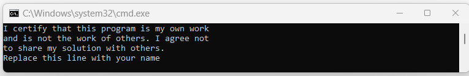
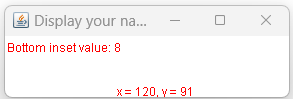

Revised 02/16/26
R. G. Baldwin instructor
A detailed set of instructions is provided in a separate document titled Instructions for Downloading and Submitting Assignments that you can view at the Orientation link in your Blackboard course.
I recommend that you study those instructions very carefully and make yourself a checklist to ensure that you meet all of the requirements before submitting your assignment.
Failure to follow the instructions to the letter usually results in a failing grade, normally zero. The general instructions in that document apply to this assignment. In addition, this document provides specific instructions for the assignment.
If you have any questions regarding instructions, please ask them at least one week prior to the assignment deadline. Don't end up with a bad grade due to the fact that you didn't understand the instructions.
You will find a source code file for the driver class (named Proj06.java) for the program in the same zip file from which you extracted this project specification.
Software version requirements are specified in the syllabus for this course.
Proj06 Copyright 2020 R.G.Baldwin
Among other things, the purpose of this assignment is to assess your ability to write a program dealing with window events, mouse events, and the Delegation Event Model.
This assignment requires that you submit a zip file named YourNameProj06.zip containing the following files where YourName means to insert your last name:
PROGRAM SPECIFICATIONS
Beginning with the file that you downloaded named Proj06.java, create a new file named Proj06Runner.java to meet the specifications given below.
Note that you must not modify the code in the file named Proj06.java. Make sure that you understand the comments and the code in that file.
Be sure to display your name in both locations in the output as indicated.
When you place both files in the same folder, compile them both, and run the file named Proj06.java, the program must display the text shown in Figure 1 on the command line screen.
Figure 1. RequiredOutput01.png

The image in Figure 1 displays the following text.
I certify that this program is my own work and is not the work of others. I agree not to share my solution with others. Replace this line with your name
In addition, your program must display a single 300-pixel by 100-pixel Frame object similar to Figure 2.
Figure 2. RequiredOutput02.png

The image in Figure 2 displays a 300x100 Frame with the student's name in the banner at the top and two lines of red text within the client area. One line of red text near the upper-left corner of the client area reads "Bottom inset value: 8". The other line of red text at the very bottom center of the client area reads "x=120,y=91".
When you click the mouse in the client area of the Frame, the coordinates of the mouse pointer must be shown in RED above the mouse pointer.
For this and the next two assignments, the coordinate value must be displayed immediately above and to the right of the mouse pointer. The tip of the mouse pointer must be at the bottom-left corner of the first text character.
I used the word similar above for the following reason. Depending on your operating system, the Frame object that is displayed on your system may have a different appearance than on my system. When I grade your assignment, I will be looking for the following characteristics of the Frame object that is displayed.
VARIATIONS IN THE Y-COORDINATE VALUE
The client area of the Frame is the space where custom drawing and components can be added. It excludes the non-client areas like the title bar and the borders. (You cannot display coordinate values on the title bar and the borders.)
The bottom inset value is the thickness of the bottom border. It can be determined by calling getInsets().bottom on the Frame object.
You can ignore the x-coordinate value when matching Figure 2. As a result of differing inset values, the y-coordinate value may vary from one operating system to the next when you click the bottom of the client area. The y-coordinate value displayed on your system must be equal to one of the following:
99 minus the bottom inset value (ideal)
98 minus the bottom inset
value
97 minus the bottom inset value
The differences in the values shown allow for the physical difficulty of clicking the very bottom of the client area. One of those values is what I expect to see when I examine your screenshot described below.
When I compile and execute your code on my system, and click the bottom of the client area, the y-coordinate value must be 91 as shown in Figure 2.
You may find it necessary to consult the Java documentation and take class inheritance into account to meet these specifications.
SUBMITTING YOUR ASSIGNMENT
Encapsulate the required files in a zip file named YourNameProj06.zip and submit the zip file as a Blackboard assignment.
Your zip file must contain the screenshot files listed above under THE DELIVERABLES in addition to any other files that may be listed there.
The zip file from which you extracted this document contains a file named RequiredOutput01.png and a file named RequiredOutput02.png.
The screenshot files that you submit must be a screenshots showing side-by-side comparisons of the outputs from your program and the given files named RequiredOutput01.png and RequiredOutput02.png. Place the given file on the left, place your output on the right, and take the screenshot.
The purpose of the screenshots is to confirm that your output matches the required output when your code is executed on your system. If it doesn't match (with the variations shown earlier), don't bother submitting it because you won't get credit for the assignment if it doesn't match. Just keep working on it until you get a match. Consult your instructor if you have any questions regarding what does and what does not constitute a match.
-end-